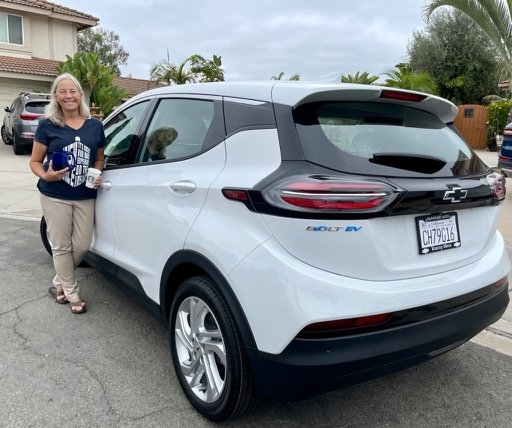
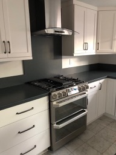
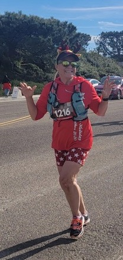
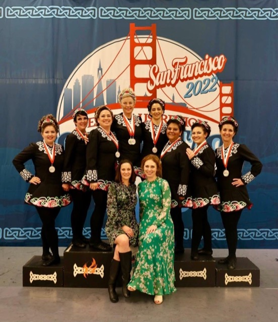
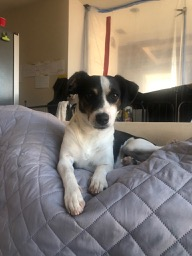

Season's Greetings from San Diego, December 2022
|
2022 has heralded quite a few changes for me. I started the year working two jobs, but could not sustain working so many hours. I decided to take a gamble and quit the more lucrative coding teacher job and search for a single job that would meet all my needs. After a few months of job searching, I finally landed at a wonderful charter elementary school, teaching STEAM for all grades K-5. I work with an excellent group of educators and could not be happier. 

|


I love to spend time by the ocean as often as possible, running along the coast or paddle boarding on the flat water at Mission Bay and Liberty Station.
|

During the summer, I made the crazy decision to foster a couple of young dogs from a rescue in Mexico. I originally thought I might adopt them permanently, but my new job requires me to spend too many hours out of the home and I am hoping to soon find them their forever home.
Lisa (above) moved to London in June and now works for The Electoral Commission, which oversees elections and regulates political finance in the UK. She deferred her college graduation ceremony to next year and I am really hoping it will be in the summer so I can spend some time over there when I am on a break from teaching. Unfortunately, there is also a strong possibility it will be in February which is less desirable on so many levels. Keep your fingers crossed for us please! Wishing you all a very happy
holiday season!
|